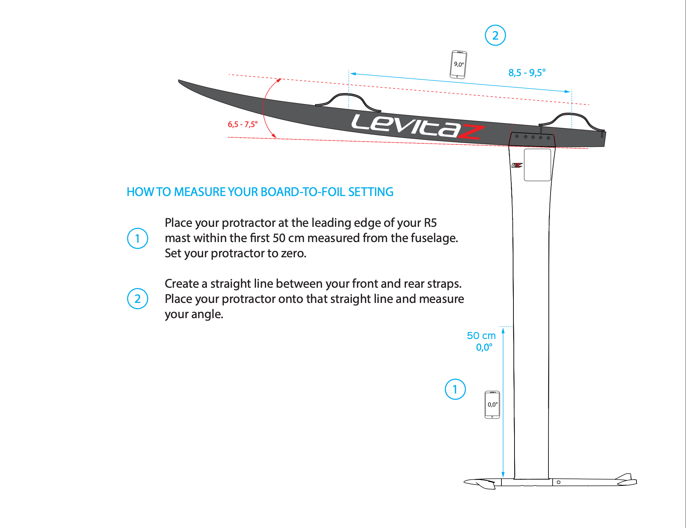

LEVITAZ · R5 SETUP GUIDE
마스트를 기준으로
보드–포일 세팅 각도 측정하기
원문 제목: HOW TO MEASURE YOUR BOARD-TO-FOIL SETTING
적용 범위: 제공된 원문은 R5 마스트를 기준으로 설명합니다. 아래 내용을 다른 모델의 공통 권장 각도로 적용하지 마세요.
측정 순서 · 원문 전체 번역
마스트 앞전에서 영점 맞추기
퓨즐라지에서부터 거리를 잰 첫 50cm 이내 구간에서, R5 마스트의 앞전(리딩 에지)에 각도계를 댑니다. 각도계를 0°로 설정합니다.
그림 ①: 퓨즐라지 쪽에서 마스트를 따라 표시된 50cm 구간과 0.0° 영점을 확인하세요.
앞·뒤 스트랩 사이의 직선에서 측정하기
앞 스트랩과 뒤 스트랩 사이를 잇는 직선을 만듭니다. 그 직선 위에 각도계를 올려 각도를 측정합니다.
그림 ②: 파란색으로 표시된 앞·뒤 스트랩 사이의 직선을 사용합니다. 각도계 표시는 ①에서 설정한 영점을 기준으로 읽습니다.
원본 측정 도식

그림에 표시된 수치
- 마스트 영점 설정 구간
- 퓨즐라지에서 첫 50cm 이내
- ① 영점
- 0.0°
- ② 파란색 직선의 각도 표기
- 8.5~9.5° · 각도계 표시 예시 9.0°
- 빨간색 기준선 사이의 각도 표기
- 6.5~7.5°